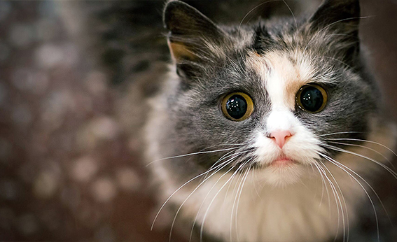

ASÍ COMENZÓ LA AMISTAD ENTRE EL GATO Y EL HOMBRE

El trabajo, publicado ayer en PNAS, la revista oficial de la Academia Nacional de Ciencias de los EE.UU., señala que los gatos salvajes se sentían atraídos por los roedores que vivían en las cosechas de los agricultores y por los alimentos de los asentamientos humanos. Fueron los primeros contactos hacia la domesticación felina en los que ambas especies se vieron beneficiadas. Los científicos indican que esta situación hizo posible la domesticación de un animal nocturno, que no era social.
Según recientes estudios, los 600 millones de gatos domésticos en el mundo actual descienden del gato Felis silvestris líbica, una especie salvaje presente hoy en Europa. “Si los felinos de Quanhucun fueran descendientes de esta especie, indicaría que fueron domesticados en otro lugar y posteriormente introducidos a la región”, asegura Marshall.
“Todavía no sabemos si estos gatos llegaron a China desde Oriente, se cruzaron con otras especies de felinos asiáticos, o si los gatos procedentes de China tuvieron algún un papel en el proceso de domesticación”, recalca la investigadora.
La amistad entre el gato y el hombre se originó hace más de 5.300 años, gracias a la agricultura, 14.000 años más tarde que la del perro. Un equipo internacional de científicos ha encontrado las primeras evidencias de la relación entre felinos y humanos al analizar los restos óseos de animales en el yacimiento chino de Quanhucun.